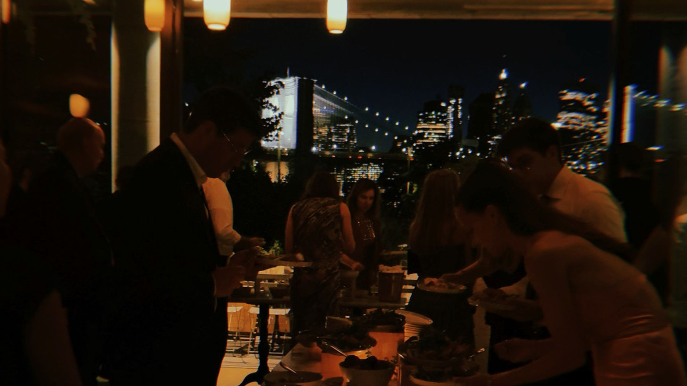

I'm Matthew — a record collector who DJs weddings in New York, New Jersey, and the Hudson Valley. About forty-five a year, from intimate dinner rooms to floors past two hundred.
Roy Ayers, Curtis Mayfield, Gilberto Gil, Kokoroko. Soul and rare groove with Brazilian and West African on the side. The hour the room starts trusting the night.
Dinner
Otis Redding, Patrice Rushen, Sade, Steely Dan, LCD Soundsystem. Songs you can sit with that still move. Not background, not a concert.
Dance
Earth, Wind & Fire, Donna Summer, New Order, Robin S, Peggy Gou. Disco spine with a new-wave detour and 90s house. The three records before the big one are the job.
Cocktails opened on Alex G's 'Sarah,' the room circled up for seven blessings and a glass stomp, and the first dance rolled into a klezmer hora into 'Let's Groove' — eleven minutes, no announcements.
Cocktails opened on Alex G's 'Sarah,' the room circled up for seven blessings and a glass stomp, and the first dance rolled into a klezmer hora into 'Let's Groove' — eleven minutes, no announcements.
Room: Rule of Thirds · Wedding — cocktails, dinner, a hora, and a dance floor in a restaurant · Greenpoint, Brooklyn
A glass-conservatory ceremony, a city-pop dinner, a Chet Baker × Disturbed first dance, and a room that closed the night arms-up to High School Musical.
Room: The Madison Hotel · Wedding — glass-conservatory ceremony through a ballroom dance floor · Morristown, NJ
85 guests in a Williamsburg room built for 91 — an eclectic open into a disco-and-funk spine, a Dirty Dancing first dance, and 'Proud Mary' into 'Last Dance' a couple of minutes past midnight.
Room: Aurora · Wedding — cocktail through dance floor · Williamsburg, Brooklyn, NY
A cross-cultural black-tie night at a West Orange château — Persian and Nigerian woven through one open-format floor, a Sigur Rós processional, and a house-and-techno afterparty to two.
Room: Pleasantdale Chateau · Wedding — ceremony, ballroom, and a late afterparty · West Orange, NJ
A cocktail-hour set of deep cuts — Brazilian jazz, soul, and boogie — recorded live in one pass. Collector records that carry a room without leaning on anything the guests walked in already knowing.
A 75-guest wedding on a Sunset Park rooftop farm — a lovers-rock-into-deep-soul dinner spine, a choreographed Klaus Hallen Tanzorchester first dance, a disco-into-2000s floor, and Juvenile to close.
Room: Brooklyn Grange · Wedding ceremony through dance floor · Sunset Park, Brooklyn, NY
75 guests inside Eero Saarinen's 1962 terminal. Ceremony under the ARRIVES / DEPARTS board, Korean Paebak in 1960s mod architecture, and a dance floor that sat empty for ten minutes before Bieber broke the seal — then a K-pop spine, three Katy Perry tracks, and a Birthday closer.
Room: TWA Hotel · Korean-American wedding ceremony through dance floor · JFK Airport, Queens, NY
A 130-person North Jersey wedding where rain hit the ceremony, the floor held all night on a disco-to-millennial weave, a groom's-father Louis Armstrong request got parked at 8:05 to protect the dance arc, and three alpacas showed up at cocktail hour.
Room: Waterloo Village · Wedding ceremony through patio afterparty · Stanhope, NJ
A 275-person Italian-American wedding in a hangar-scale industrial loft on the East River, with rain pushing the ceremony into the tent, a silent two-hour video reel running opposite the booth, and a dance floor that broke open on Cheryl Lynn into Earth, Wind & Fire.
Room: Sound River Studios · Wedding ceremony through dance floor · Long Island City, NY
West Coast invasion in the most quintessential NYC hotel. Behind-the-bar ceremony position, a column in the sightline, a live Blackbird through a DI box, and a singalong crowd that held the floor from Golden to the Friends theme.
Room: The Hotel Chelsea · Full wedding reception · New York, NY
2026-04-13Mix
Open Funk Format
An open-format funk mix for restaurant gigs, lounges, and rooms where nobody asked for a playlist but everybody notices the music.
A Williamsburg hotel wedding where the venue speakers weren't going to cut it, the couple was extremely chill, dinner was in a candlelit cellar, no mic needed, and the entire room — family included — raged through the full length of All My Friends.
Room: Wythe Hotel · Full wedding reception · Brooklyn, NY
Collector records that still work on people. Not the ones that sound good at home on headphones. The ones that move a room full of strangers who've never heard them before.
Key records: Roy Ayers, Idris Muhammad, Lonnie Liston Smith, Donald Byrd
Dinner has to keep the room alive without competing with conversation. Too quiet and the energy dies. Too loud and the room fights you. The set has to breathe on its own.
2026-02-05Mix
Disco House Mix
Disco into house. The tempo lift after midnight when the floor is already committed.
Cocktail hour sets the room's first temperature. The Meters into Say She She into Idris Muhammad. First hour. First signals. The room is learning what kind of night this is.
Artists: The Meters, Say She She, Prince, Idris Muhammad, Peter Cat Recording Co., Feist, Marvin Gaye
A smaller vendor room at Brooklyn Winery. Vintage-leaning selections, live audio, and the kind of groove adjustments that only show up once the room starts talking back.

Brooklyn Winery, Jan 2026
Room: 40 people, cocktail format, vendor appreciation night
A split-location North Jersey wedding. Park ceremony, a Dennis Edwards dinner pivot that won over the old heads, and the last 45 minutes opened into millennial hip-hop, Gasolina, and a very clean late-night lane.
Room: Englewood Field Club · Ceremony through dance floor · Englewood, NJ
Booking
Booked through Non-Traditional Wedding DJs.
Every wedding I play is booked and handled by NTW. To check a date or start a booking, reach the team: